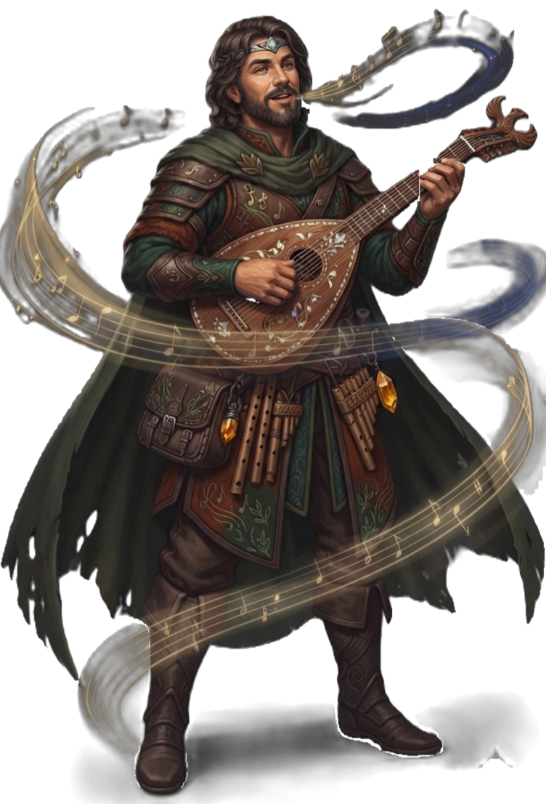

| Rolle | Vollzauberer · Unterstützung · Kontrolle · Heiler · Gesicht der Gruppe |
| Zauberertyp | Vollzauberer Zauberslots bis Rang 9 |
| Primärer Schadensattribut | Charisma (CHA) |
| Sekundärer Schadensattribut | — |
| Zauberattribut | Charisma (CHA) |
| TP (L1) | 8 |
| TP pro Level | 5 |
| Rüstung | Leichte Rüstung |
| Waffen | Bardenwaffen — Rapier, Langschwert, Handarmbrust, Dolche |
| Rettungswürfe | Charisma (CHA), Weisheit (WIS) |
| Attributsteigerung (Level) | 4, 8, 12, 16 |
| Fertigkeiten (3 zur Auswahl) | Auftreten, Überzeugen, Lügen, Etikette, Kreativität, Intuition, Wahrnehmung |
Der BARDE ist der Liederheld — er inspiriert Verbündete, bezaubert Gegner und füllt jede Rolle aus die die Gruppe braucht. Charisma treibt seine Zauber, Weisheit schützt ihn, und drei Fertigkeiten seiner Wahl machen ihn zum Gesicht der Gruppe in jeder sozialen Situation. Seine Bardeninspiration (L1) gibt Verbündeten Bonus-Würfel die sie auf Angriffe, Rettungswürfe oder Fertigkeitsproben addieren können — der vielseitigste Unterstützungs-Mechanismus im Spiel. Lied der Tapferkeit bufft Angriffe, Lied der Helden bufft die RK, Heilgesang und Heiltroubadour heilen. Spott und Brechung kontrollieren Gegner, Machtwort betäubt, Wunsch (L20) kopiert einen beliebigen Zauber. Mit Magische Geheimnisse (L10) kann er Zauber aus jeder Klasse lernen — er ist nicht auf Barden-Zauber beschränkt. Er ist kein reiner Schadensverursacher, aber er macht jede Gruppe besser nur durch seine Anwesenheit.
| Level | Fähigkeit | Beschreibung |
|---|---|---|
| L1 | Bardeninspiration | Bonus-Aktion: Verbündeter erhält Inspirations-Würfel (W6, skaliert auf W8/W10/W12 bei L5/L10/L15). Auf Angriffe, Rettungswürfe oder Fertigkeitsproben addierbar. |
| L2 | Allround-Talent | Passiv: Halber Profan-Bonus auf nicht-profiente Fertigkeitsproben. |
| L2 | Lied der Ruhe | Kurze/Lange Rast: Bonus-TP für alle Verbündeten. |
| L3 | Expertise | Doppelter Profan-Bonus auf 2 Fertigkeiten. |
| L5 | Quelle der Inspiration | Bardeninspiration: Erholung bei Kurzer Rast statt Lange Rast. |
| L6 | Zusätzlicher Angriff | 2 Angriffe pro Angriffs-Aktion. |
| L6 | Gegenzauber | Verbündete in 30ft: Vorteil gegen Bezaubert und Verängstigt. |
| L10 | Magische Geheimnisse | Wähle 2 Zauber aus jeder Klasse (bis Rang 5). |
| L14 | Magische Geheimnisse+ | Wähle 2 weitere Zauber aus jeder Klasse (bis Rang 7). |
| L18 | Verbesserte Inspiration | Bardeninspiration wird W12 (skaliert automatisch). |
| L20 | Überlegene Inspiration | Passiv: Bei Initiative erhältst du mindestens 1 Bardeninspiration zurück. |
Alle Zauber nutzen Zauberslots (Vollzauberer-Progression, Rang 1–9). Zauberattribut ist Charisma (CHA). Upcast-Skalierung pro zusätzlichem Zauberslot bei Schallstoß (+1W8), Heilgesang (+1W4 Heilung), Heiltroubadour (+1W8 Heilung).
| Fähigkeit | Aktion | Nutzung | Level | Beschreibung |
|---|---|---|---|---|
| Schallstoß | Aktion | Basiszauber — unbegrenzt | L1 | STURM 1W8 Donner, Angriffswurf. Upcast mit Zauberslot: +1W8 pro Slot. |
| Fähigkeit | Aktion | Nutzung | Level | Beschreibung |
|---|---|---|---|---|
| Heilgesang | Aktion | Zauberslot 1 | L1 | LICHT Berührung: Heile 2W4+2. Upcast: +1W4 Heilung pro Slot. |
| Lied der Tapferkeit | Aktion | Zauberslot 1 | L1 | GEIST Flächeneffekt 10ft: Verbündete erhalten +1W4 auf nächsten Angriff. |
| Spott | Aktion | Zauberslot 1 | L1 | GEIST Ziel muss WIS-Rettungswurf ablegen oder erhält Nachteil auf Angriffe (1 Minute). |
| Unsichtbarkeit | Aktion | Zauberslot 2 | L3 | GEIST Verbündeter wird unsichtbar für 1 Minute. |
| Brechung | Aktion | Zauberslot 3 | L5 | GEIST Ziel muss WIS-Rettungswurf ablegen oder wird bezaubert (1 Minute). |
| Heiltroubadour | Aktion | Zauberslot 3 | L5 | LICHT Flächeneffekt 10ft: Heile alle Verbündeten 3W8. Upcast: +1W8 Heilung pro Slot. |
| Lied der Helden | Aktion | Zauberslot 4 | L7 | GEIST Flächeneffekt 10ft: Verbündete erhalten +2 RK für 1 Minute. |
| Machtwort | Aktion | Zauberslot 4 | L7 | GEIST Ziel muss WIS-Rettungswurf ablegen oder wird betäubt (1 Runde). |
| Fähigkeit | Aktion | Nutzung | Level | Beschreibung |
|---|---|---|---|---|
| Wunsch | Aktion | 1/Lange Rast | L20 | Kopiere einen beliebigen Zauber Rang 8 oder niedriger. |
| Ressource | Mechanik | Verfügbarkeit |
|---|---|---|
| Zauberslots | Vollzauberer-Progression (Rang 1–9). Zauberattribut: CHA. | Alle Zauber, pro Zauberslot |
| Bardeninspiration | Bonus-Aktion: Verbündeter erhält Inspirations-Würfel (W6→W8→W10→W12) | Pro Rast, ab L1 (Kurze Rast ab L5) |
| Wunsch | Kopiere beliebigen Zauber Rang 8 oder niedriger | 1/Lange Rast, ab L20 |